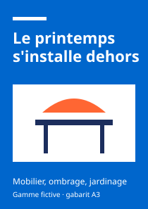
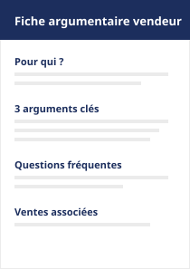

Non-alimentaire : présenter une gamme et faciliter la sélection
Un showroom professionnel pour qu'un acheteur ou un responsable de rayon comprenne une petite gamme saisonnière, compare les références et prépare sa sélection.
Sujet exploratoire : une gamme printemps d'équipement extérieur. Produits, caractéristiques et documents sont inventés pour la démonstration ; aucun prix, stock ni certification n'est indiqué.
Fiche offre courte
- Cible
- Acheteur ou responsable de rayon d'un magasin, qui prépare la saison printemps.
- Besoin
- Comprendre rapidement la gamme, comparer les références entre elles et constituer une sélection à discuter.
- Promesse
- Toute l'information utile sur la gamme au même endroit, et une demande d'information préparée en quelques clics.
- Message clé
- « Comparez la gamme printemps et préparez votre sélection. »
- Objectif
- Aider le professionnel à comprendre la gamme, comparer les références et préparer sa sélection ; transmettre aux équipes commerciales des demandes d'information précises.
Prototype : le showroom professionnel
Parcours clé : rechercher, filtrer, ouvrir une fiche, comparer, ajouter à sa sélection, puis préparer une demande d'information. Aucune donnée n'est envoyée ni conservée.
Gamme printemps extérieur (fictive)
Six références pour la terrasse, le jardin et le balcon.
Par nom ou usage. Exemple : parasol
Comparaison (0 produit sur 3 maximum)
Cochez « Comparer » sur deux ou trois produits, puis affichez le tableau.
Ma sélection (vide)
Ajoutez des produits avec « Ajouter à ma sélection » pour préparer une demande d'information.
Demande d'information sur ma sélection
Demande préparée (démonstration).
Sur un espace réel, elle serait transmise à l'équipe commerciale. Ici, rien n'a été envoyé ni conservé.
Kit d'animation commerciale (aperçu)
Un kit simple pour accompagner la mise en avant de la gamme en magasin, téléchargeable depuis le showroom sur un espace réel. Gabarits fictifs.

Affiche A3 : annonce de la gamme en entrée de rayon. Stop-rayon : signalétique au plus près des produits. 
Fiche argumentaire : aide pour les équipes de vente.
Mise en place suggérée
- Les équipes commerciales présentent le kit lors du lancement de la gamme.
- Le magasin choisit les supports dans le showroom et les commande ou les imprime.
- Un retour photo ou un court questionnaire permet de suivre la mise en place.
Choix, accessibilité et pilotage
Les principaux choix UX
- Recherche et filtres au même endroit, avec le nombre de résultats annoncé à chaque changement.
- Des filtres par usage autant que par catégorie : un acheteur raisonne aussi en emplacement (terrasse, balcon, jardin).
- La comparaison limitée à trois produits : au-delà, le tableau devient illisible sur mobile.
- Une sélection qui débouche sur une demande : la sélection n'est pas une fin en soi, elle prépare l'échange commercial.
- Des fiches en fenêtre de dialogue : on consulte le détail sans perdre sa position dans la liste.
Accessibilité (RGAA)
Référentiel RGAA 4.1.2. Même méthode que pour le cas énergie (script Playwright, axe-core 4.14.0), le 29 octobre 2026. Quelques critères seulement : pas de conformité ni de taux annoncés.
| Critère RGAA 4.1.2 | Élément concerné | Méthode de test | Mise en œuvre ou correction | Résultat vérifié |
|---|---|---|---|---|
| 1.1, 1.3 Image porteuse d'information avec alternative pertinente | Illustrations des six produits et des trois supports du kit | Script (attribut alt présent) ; relecture des textes | Alternative décrivant l'illustration ; pour les supports du kit, l'alternative reprend le texte visible dans l'image | Vérifié 9 images, toutes avec alternative |
| 1.2 Image de décoration ignorée | Pictogrammes (flèches, coches, alertes) | Script : SVG sans aria-hidden ni role="img" | aria-hidden="true" sur chaque pictogramme qui double un texte | Vérifié 0 SVG non masqué |
| 7.3 Script contrôlable au clavier | Recherche, filtres, fiche, comparaison, sélection, demande | Parcours complet au clavier seul à 1280px et 375px | Éléments natifs ; fiche dans un dialog modal natif, fermeture par Échap et retour du focus sur le bouton d'origine | Vérifié parcours réalisé de bout en bout ; focus maintenu dans la fiche ouverte |
| 7.5 Messages de statut | Nombre de résultats, ajout ou retrait de la sélection et de la comparaison, limite de trois produits | Script : contenu des zones aria-live après chaque action | Zones aria-live="polite" ; le libellé du bouton devient « Dans ma sélection » | Vérifié (code et DOM) annonces à tester avec un lecteur d'écran |
| 5.6, 5.7 En-têtes du tableau de données | Tableau de comparaison | axe-core ; lecture du code | caption, th scope="col" (produits) et scope="row" (caractéristiques) | Vérifié 0 violation axe |
| 11.1, 11.5, 11.10 Étiquettes, regroupements, contrôle de saisie | Recherche, filtres, formulaire de demande | Script : envoi vide puis complété | Libellés visibles ; filtres en fieldset et legend ; cases « Comparer » complétées du nom du produit en texte masqué | Vérifié 4 erreurs signalées sur la demande vide, confirmation après correction |
| 10.7 et 12.7 Focus visible, lien d'évitement | Page entière | Script de tabulation | Voir le cas énergie | Vérifié |
Restant à faire : restitution avec des lecteurs d'écran (dont le dialog sur iOS), zoom à 200 %, revue de la pertinence des alternatives par une personne qui ne connaît pas le projet, audit complet par un auditeur.
Visibilité : recherche interne d'abord
- Espace professionnel privé : il n'a pas vocation à être indexé. La protection repose sur l'authentification ; une directive robots.txt ne suffit pas à empêcher l'indexation. Ajouter
noindexpar sécurité et ne pas inclure ces pages dans le sitemap. - Recherche interne : synonymes métier (« voile d'ombrage » pour « parasol »), tolérance aux fautes, suggestions ; suivi des recherches sans résultat pour enrichir les fiches.
- Information produit : caractéristiques structurées et homogènes entre fiches, pour que filtres et comparaison restent fiables.
- SEO/GEO : réservé à une éventuelle page publique présentant la gamme et le principe du showroom, avec un appel à l'action vers la connexion.
Questions de test du showroom
Même protocole que pour le cas énergie, avec deux à trois responsables de rayon :
- « Trouvez les produits adaptés à un balcon. »
- « Comparez les deux salons et dites lequel conviendrait à votre magasin, et pourquoi. »
- « Préparez une demande d'information pour trois produits. »
À observer : compréhension des filtres, utilité perçue de la comparaison, informations manquantes sur les fiches.
Lancement et indicateurs Aucun objectif chiffré sans état initial
Lancement : présentation aux équipes commerciales, annonce aux magasins (e-mailing, réunion), mise à disposition du kit ; point hebdomadaire sur les demandes reçues pendant la saison.
| Indicateur | Événement | Paramètres |
|---|---|---|
| Consultation des fiches | view_item | item_id, item_category |
| Usage de la recherche et des filtres | search, filtre_applique | search_term, filtre, nombre de résultats |
| Utilisation de la comparaison | comparaison_affichee | nombre de produits |
| Sélections | selection_ajout, selection_retrait | item_id |
| Demandes d'information | generate_lead | nombre de produits, objet |
| Kit d'animation | kit_telechargement | support |
Hotjar : carte de chaleur de la grille et des filtres, enregistrements du parcours sélection → demande, champs masqués et après consentement. Ce portfolio n'embarque aucun de ces outils.